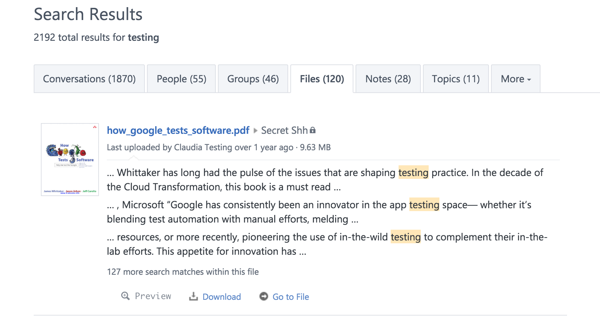
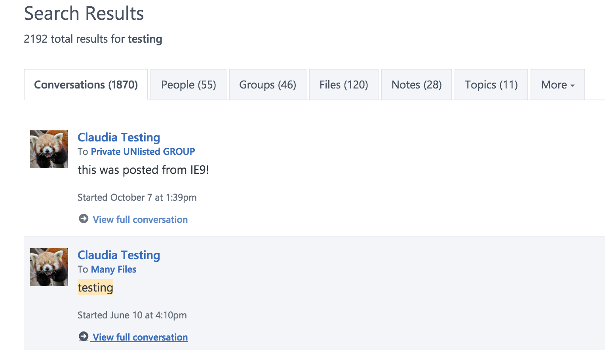
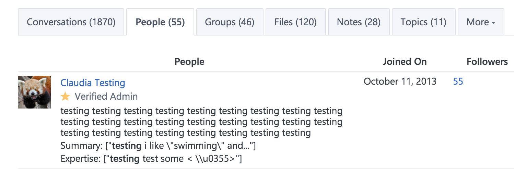

gem 'hpricot', '~> 0.8.6'
git blame Gemfile | grep hpricot
git blame 81f513b7^ Gemfile | grep hpricot
git blame 566011ef^ Gemfile | grep hpricot
git blame 51b85d27^ Gemfile | grep hpricot
git blame 9210cf0a^ Gemfile | grep hpricot
du -sh --exclude="*.html" ./gems/hpricot-0.8.6/ -> 1.9M
du -sh --exclude="*.html" ./gems/activerecord-3.2.22/ -> 1.5M
w. :T_STRING=>765035
wo.:T_STRING=>755791
adds: ~10K strings
nokogiri: 2453.9 i/s
hpricot: 1505.4 i/s - 1.63x slower
grep -r --color Hpricot --exclude-dir="log" --exclude-dir=".git" .
./app/helpers/application_helper.rb: Hpricot(text).text_transform!
./lib/letterbox/request.rb: doc = Hpricot self.html_part
def highlight(text, phrases, highlighter = '...')
... Hpricot(text).text_transform! ... { |text| }
end
commit a4e1df1072aaaf859c9f949c7d59b1477cb14e8a
Author: Adam Pisoni
Date: Thu Apr 17 13:41:48 2008 -0700
I replaced rails highlight method with one that doesn't highlight within tags.
in Apr 2008 we had rails v2.0.x and a proper highlight method went to rails only in v2.3.2 around March 2009



Summary: ["testing i like \"swimming\" and..."]
Expertise: ["testing test some < \\u0355>"]
git diff --stat master .
Gemfile | 1 -
Gemfile.lock | 2 --
app/helpers/application_helper.rb | 11 -----------
lib/extensions/hpricot_text_transform_ext.rb | 31 -------------------------------
lib/letterbox/request.rb | 3 +--
5 files changed, 1 insertion(+), 47 deletions(-)